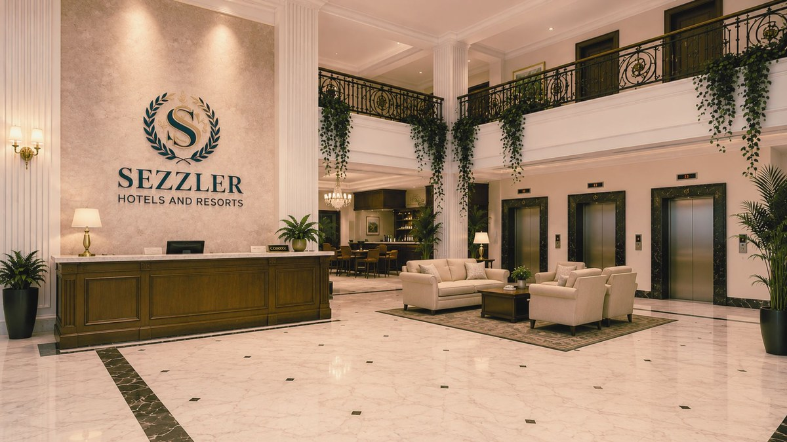
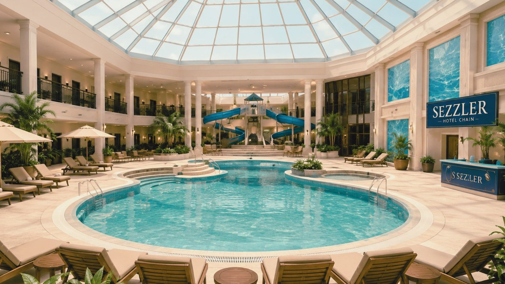
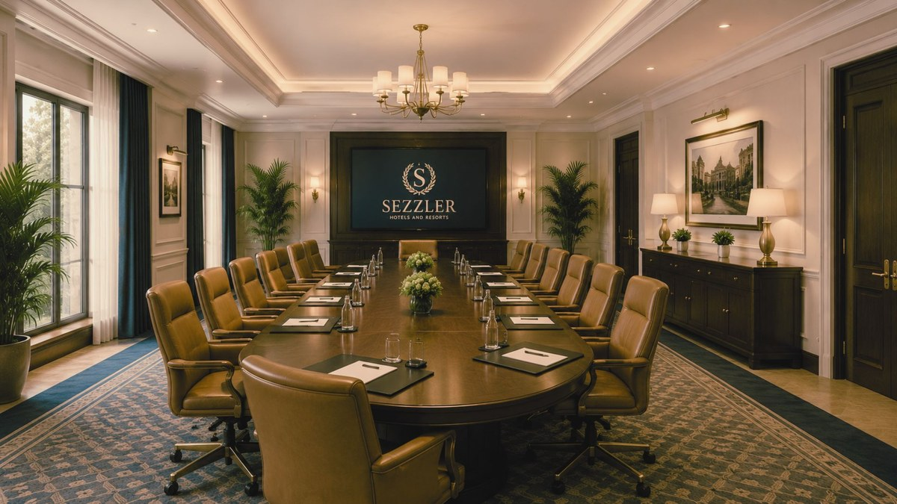

[#]Sezzler Hotels & Resorts — Lost Hills
The Sezzler Lost Hills Conference Resort is the region's premier conference and leisure destination, located in the heart of downtown Lost Hills at Civic Center Way and 2nd Avenue. 312 guest rooms across three towers, four restaurants, a 47,000 sq ft conference center with three pavilions, an indoor pool, and 18-hole executive golf. Host of the 1993 Shadewater Applied Systems Conference.



Rooms & Rates
| Type | Rate (USD) | Notes |
|---|---|---|
| Standard King | $89 / night | Tower 1 & 2 |
| Standard Double | $94 / night | Tower 1 & 2 |
| Deluxe Lake View | $129 / night | Tower 3 (south face) |
| Conference Suite | $189 / night | Tower 2, level 7 |
| Corporate Long-Stay | by arrangement | Shadewater & SASC delegates |
| Service Floor B12 | [not a guest floor] | [entry from maintenance log — do not book] |
Conference Facilities
- Main Hall (capacity 1,400)
- Pavilion A — press, exhibit, panels
- Pavilion B (B1–B11) — breakout rooms
- Pavilion B12 [not present on printed floor plan]
- Pavilion C — banquet & exhibits
- Atrium & outdoor lawn
Dining
- The Cedar Room — fine dining, Pacific Northwest
- Lobby Cafe — all-day light fare
- Pavilion Grill — breakfast & lunch, conference week
- Lakeview Lounge — cocktails, light evening menu

Smart Elevator Routing
Sezzler is the first conference resort in the Pacific Northwest to deploy Shadewater's Smart Elevator Routing, which predicts vertical demand based on session schedules and reduces guest wait times by an average of 34 seconds. Demonstration tours daily during SASC.
Guest Services
- 24-hour front desk
- Concierge (Sezzler Gold members)
- Business center & fax services
- CityNet public access terminal (lobby)
- Free shuttle to North Plaza
- Valet parking
Conference Keycard Warning
Guest Registry (May 1993 archive)
Registry queries should be directed to the Sezzler front desk. The Clerk's Office has received 14 requests in May 1993 from guests whose stays do not appear in the registry, and 3 from non-guests whose names do appear.
Floor Plans
Reservations
Toll free: 1·800·SEZZLER
Local: 555·7000
Fax: 555·7001
Reservations placed via CityNet are pending review.
About Sezzler Hotels & Resorts
Sezzler operates 22 properties across the Pacific Northwest and western Canada. Lost Hills is the chain's flagship conference property and the only Sezzler location offering Smart Elevator Routing.
Sezzler Concierge Notes (selected, May 1993)
| Date | Note |
|---|---|
| 05/17 | Conference welcome reception. Atrium at capacity. Smooth. |
| 05/18 | Guest in 714 requests floor schematic; provided. Returned to desk asking about "the floor without windows." Politely escorted to Lounge. |
| 05/19 | Elevator B-bank intermittently reports "B12" on the call panel. Maintenance dispatched. Sezzler engineering states there is no B12. |
| 05/20 | SASC delegate left keycard in maintenance slot. Card returned warm to the touch; reissued. |
| 05/21 | [entry pending verification — restored from B12 once] Front desk took 41 calls between 03:17 and 03:18. |
| --/-- | Note removed at request of management. |
UNDER CONSTRUCTION The Sezzler online reservation form is not currently accepting submissions. Please call the front desk.